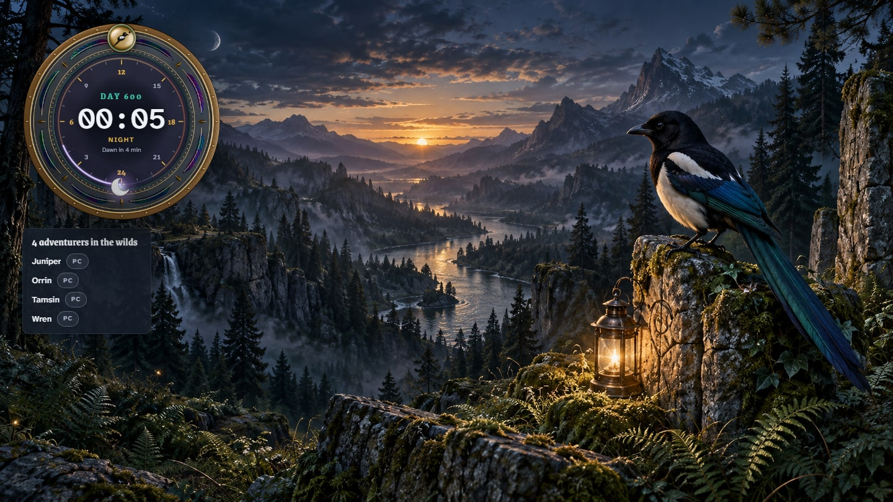

Four sample adventurers, the in-game clock at 00:05 on day 600 with four minutes to
dawn, recent events, the last save and a player-count history. The day and hour also run
along the top of every page. The scenery can be switched off in the running app.
A character's twelve skills and experience, level history, this week's experience, a
skill planner, gear and inventory, sessions and deaths. Save-derived progress is
labelled with the time it was read.
Pick items and building pieces. The ledger works back to raw materials with the game's
own recipes, uses what the group carries, shows who can craft each step and how the
others learn it, and adds up what the base still needs. Plans can be shared by link.
Total level and skills, quests by area, journal, recipes and building pieces unlocked
out of the game's totals, the bosses each adventurer has beaten and their latest unlock.
Region boundaries, landmarks and layers from the game build: resources, creatures,
chests, lore, quests, dungeons, shrines, teleporters and vents. Find where an item or
creature lies. With Player positions on, the last saved positions, bases and the day's
deaths.
The day and hour on a dial rendered in Blender, at 00:05 on day 600 with four minutes
to dawn. It counts on from the world save at the game's own rate, so it keeps time on
a rented server too.

/watch puts the dial and who is on over a transparent background for OBS
or any browser source. Here it sits over Magpie's woodland art in place of a game.
A filterable journal of arrivals, departures, discoveries and other observed events. The
optional server mod supplies the events the server log does not report.